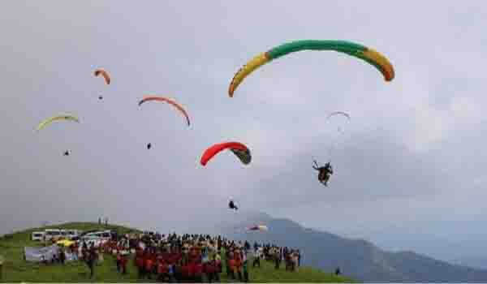
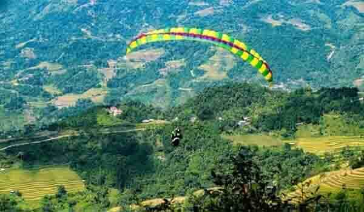

Paragliding in Maharashtra a coveted attraction for the travellers. As every adventure enthusiast knows, paragliding is a type of flying sport that has gained huge popularity in recent years.
Paragliding is a sport in which the players fly in the air using paragliders. These paragliders are light in weight and are foot launched. There is a harness in the glider on which the paraglider sits. This harness is interconnected to the glider.
As everyone wants to explore the fascination of flying in the sky, at least once in their lifetime. Maharashtra paragliding is a lifetime experience as it is an amazing sport and one of the best ways to enjoy the thrill of life. Maharashtra is the only state in central India, which has well-facilitated training centres for paragliding and sites, where this activity can be carried out. Kamshet and Panchgani are two of the best places in Maharashtra, where one can indulge in some of the best paragliding activities of India.
Weather plays a huge role in paragliding and the glider should be absolutely sure of the weather conditions, before starting the flight. Winds blowing with average speeds of about 20km/hr are perfect for both smooth and dynamic flying. These two places offer the perfect and most reliable weather conditions for getting completely trained and flying high in the open sky.
Kamshet Paragliding :
Kamshet is a small town in Pune district, Originally known as Karmakshetra, it is also very near to the twin hill stations of Khandala and Lonavala. As Kamshet is blessed with both beautiful weather conditions and topography, it has become a popular destination for paragliding in the state. Due to the presence of Sahyadri ranges in this region, the glider can take the advantages of the low hills and proper landing space, which are the perfect conditions for him to take off.
The period between October and June provide ideal weather conditions for paragliding. Kamshet is rightfully known as the home for paragliding, as it offers world-class paragliding facilities throughout the year.
Panchgani Paragliding :
Panchgani is located in the middle of five of the fascinating hills of the Sahyadri Ranges. If you are an adventure fanatic, then paragliding in Panchgani will definitely give you the desired adrenaline boost. Panchgani has gained a special place in the heart of paragliders. The reason extends from a pleasant climate, clear skies, and mesmerizing views of nature around. Paragliding in Panchgani is an exciting activity where you will be able to gain 360-degree views of the place and feel like a bird.
November to February is the best time for paragliding in Panchgani. Bhilar, Khinger and Tapola are the three most popular paragliding destinations in Panchgani.In Panchgani, you can participate in two different types of flight: tandem and solo. In both the flights, you can reach up to a height of 4,000 to 5,000ft.
Paragliding is one such experience, where one can feel as free as a bird and witness the beauty of nature underneath. The panoramic views of the lakes, green hills, dense forests and settlements reducing in size, are some of the rarest sights, worth viewing.